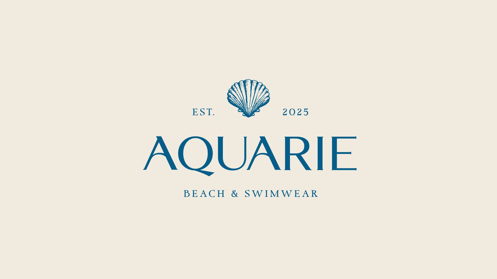
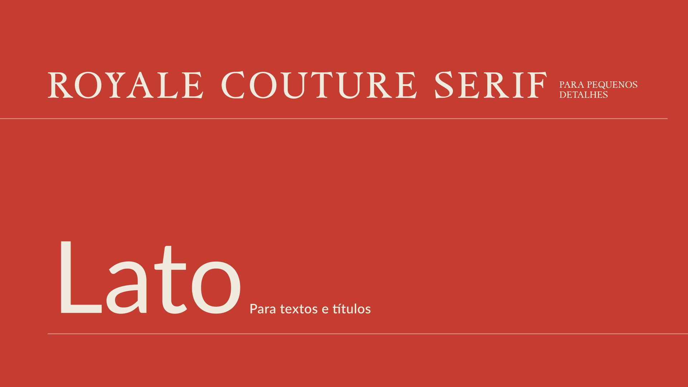

AQUARIE
Uma marca de moda praia com alma de verão à beira-mar: serifas elegantes, ilustrações em gravura e uma paleta de sol, mar e areia.
- Cliente
- AQUARIE Beach & Swimwear
- Ano
- 2025
- Papel
- [seu papel]
- Escopo
- Identidade visual, ilustrações, tipografia e aplicações

Contexto e desafio
[Quem é a Aquarie, para quem ela vende e o que o cliente pediu.]
Conceito
A identidade evoca o verão clássico de litoral, o da janela aberta para o mar, da cadeira listrada e do guarda-sol, com o refinamento de uma marca de moda. O logotipo em serifa de contraste alto ganha curvas que lembram o movimento da água, como na perna do A e na cauda do Q.

Ilustrações
Um conjunto de ilustrações em traço de gravura, em uma única cor, constrói o universo da marca: concha, cavalo-marinho, barco, coqueiro, guarda-sol, cadeira de praia, coco e a janela para o mar. Elas funcionam sozinhas, como símbolo, ou juntas, como padrão.


Cor
Uma paleta de verão: a areia como base, o amarelo do sol, o verde-água, o azul profundo do oceano e o vermelho coral, que traz energia e aparece nas listras e nos detalhes.
RGB 241 235 223
RGB 237 192 124
RGB 132 193 188
RGB 5 94 137
RGB 197 61 48
Tipografia
Royale Couture Serif, uma serifa clássica em caixa-alta, entra nos pequenos detalhes e reforça o tom de alfaiataria. Lato, uma sans-serif limpa e legível, sustenta textos e títulos.

Aplicações
Nas etiquetas, o logotipo vertical e a concha recortada pela borda criam um par. Na ecobag, as listras coral viram estampa e a etiqueta bordada assina a peça. No Instagram, a concha sozinha basta para reconhecer a marca.


Resultado
[O que foi entregue e qual foi o retorno do cliente.]